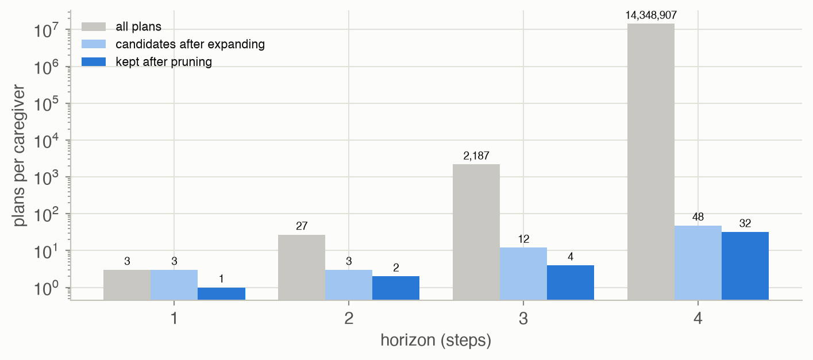
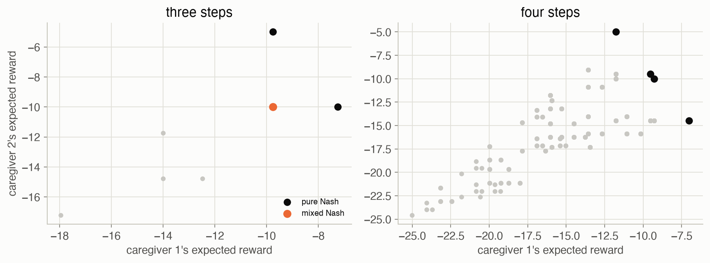
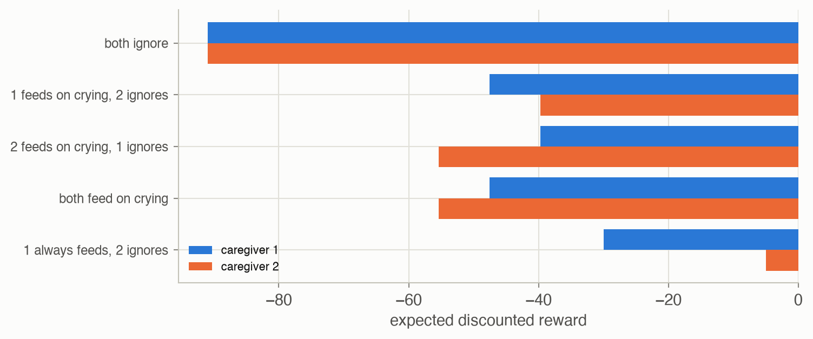

26 · State Uncertainty
Part V — Multiagent Systems
Big picture
Where this chapter fits
Chapter 25’s agents all saw the state. Here each agent sees only its own observations, as in a POMDP (Chapter 19–23), while the others act on theirs. The result, a partially observable Markov game (POMG), is the most general model in the book: an MDP, a POMDP, a simple game and a Markov game are all special cases. Chapter 27 specializes it to agents that share one reward.
The question: how do we evaluate and find equilibrium policies when no agent sees the state, and no agent sees what the others see or do?
The short answer: give up on beliefs, and work with whole policies (conditional plans or controllers) as the objects that agents choose between.
- A single agent can’t keep a useful belief: the state depends on the others’ actions, which depend on their observations.
- Evaluation of a joint policy is still exact: a recursion over conditional plans, or a linear solve for controllers.
- A POMG with \(h\)-step plans is a simple game whose actions are plans: its Nash equilibria are the POMG’s.
- Dynamic programming grows plans one step at a time and prunes plans that are never a best response, which keeps the game small.
The key ideas at a glance
A POMG has a hidden state \(s\), joint actions \(\boldsymbol{a}\), transitions \(T(s' \mid s, \boldsymbol{a})\), a joint observation \(\boldsymbol{o} = (o^1, \dots, o^k)\) drawn with probability \(O(\boldsymbol{o} \mid \boldsymbol{a}, s')\), and a reward \(R^i(s, \boldsymbol{a})\) per agent. Agent \(i\) sees only \(o^i\).
No beliefs. In a POMDP the agent updates a belief using its own action and observation. In a POMG the state also depends on the others’ actions, which depend on observations it never sees. So policies are written as conditional plans (a tree of actions, branching on one’s own observations) or controllers (a graph of nodes), as in Chapters 20 and 23.
Joint evaluation is exact: follow every agent’s plan together through every state and joint observation (a recursion), or solve linear equations over (joint node, state) pairs for controllers.
Equilibria via a game of plans. Treat each agent’s \(h\)-step plans as its actions and the joint plans’ utilities as rewards: a simple game. Its Nash equilibria are the POMG’s \(h\)-step equilibria. But the number of plans grows doubly exponentially with \(h\).
Prune what’s never a best response. Build plans one step at a time, and after each step drop any plan that isn’t a best response for any distribution over the other agent’s plans and the state (a linear program). Equilibria survive; the game stays small.
Vocabulary
| Term | Plain meaning |
|---|---|
| POMG (partially observable stochastic game) | A Markov game where each agent sees only its own observations |
| Joint observation \(\boldsymbol{o}\) | Everyone’s observations together; agent \(i\) receives \(o^i\) |
| Conditional plan | A tree: an action, then a subplan for each of one’s own observations |
| Controller | A finite graph of nodes with actions and observation-labeled edges |
| Game over plans | A simple game whose actions are whole conditional plans |
| Dominated plan | A plan that is never a best response, whatever the others do and whatever the state |
| Volunteer’s dilemma | Everyone wants the job done but would rather someone else did it |
After this chapter you can
- Write down a POMG, and explain why an agent can’t simply keep a belief.
- Evaluate joint conditional plans by recursion and joint controllers by a linear solve.
- Turn \(h\)-step plans into a simple game, and find its equilibria.
- Prune dominated plans with a linear program, and explain why pruning keeps every equilibrium.
- Recognize coordination problems (who acts?) that partial observability makes harder.
Intuition
TipAnalogy
Two parents share night duty with a baby. Neither sees whether the baby is hungry; both hear it cry, but neither knows whether the other has already got up to feed it. Feeding costs parent 1 less effort than parent 2. The best rule for each depends on the other’s rule, and each rule is a plan: “if I hear crying, get up; otherwise sleep”.
We use the multicaregiver crying baby (Appendix F.14; problem gallery). A baby is sated or hungry; each of two caregivers can feed, sing or ignore it each hour. Either one feeding sates the baby; otherwise a sated baby turns hungry half the time. Both hear the same thing: a hungry baby cries 90% of the time, a sated one never. Both pay 10 per hour of hunger; feeding costs caregiver 1 an extra 2.5 and caregiver 2 an extra 5; singing costs 0.5 and 0.25. Both start believing the baby is hungry with probability 0.5.
One hour: nobody feeds
With one hour to go, feeding can’t help: this hour’s hunger cost is already set, and there’s no next hour. So both ignore, each paying the expected hunger cost of 5. Planning ahead is what makes feeding worthwhile.
Plans are the actions
With two hours, each caregiver has 27 two-step plans: a first action, then an action for each thing they might hear. Every pair of plans has a value for each caregiver, so the whole problem becomes a 27 × 27 simple game. Its pure Nash equilibria (there are 18, many of them differing only on branches that can’t happen) give one of two outcomes: caregiver 1 feeds first (payoffs −7.5, −5) or caregiver 2 does (−5, −10). It’s a volunteer’s dilemma: each would rather the other get up. See Equation 1.
Throw away what’s never best
Plans grow fast: 2,187 three-step plans per caregiver, and 14,348,907 four-step ones. But most are never a best response. At the last step, feeding and singing only cost effort, so only “ignore” survives. Growing plans one step at a time and pruning at each step left 4 three-step and 32 four-step plans per caregiver. See Equation 3.
Controllers run forever
With no deadline, a caregiver can follow a small controller. If caregiver 2 never feeds, caregiver 1’s best 2-node controller feeds every hour (worth −30.0): the baby turns hungry half the time, and an hour of hunger (10) costs more than a feed (2.5). Feeding only after crying is worth −47.6. Against that, caregiver 2’s best response is to never feed, which earns −5.0: the cost of the first hour’s hunger, and nothing after. See Equation 2.
Formalism
Partially observable Markov games
A POMG (ADM §26.1; E. A. Hansen, D. S. Bernstein and S. Zilberstein, AAAI, 2004) has agents \(\mathcal{I}\), states \(\mathcal{S}\) with initial distribution \(b\), joint actions \(\boldsymbol{a}\), transitions \(T(s' \mid s, \boldsymbol{a})\), joint observations \(\boldsymbol{o} \in \mathcal{O}^1 \times \dots \times \mathcal{O}^k\) with probability \(O(\boldsymbol{o} \mid \boldsymbol{a}, s')\), and rewards \(R^i(s, \boldsymbol{a})\). After acting, agent \(i\) receives only \(o^i\).
It generalizes everything before it: one agent gives a POMDP; observations that reveal the state give a Markov game; a single state gives a repeated simple game. An agent can’t maintain a belief, because updating it would need the other agents’ actions and observations, which depend on what those agents believe, and so on. So policies are conditional plans or controllers.
Evaluating joint conditional plans
Let \(\boldsymbol{\pi} = (\pi^1, \dots, \pi^k)\) be conditional plans, with root actions \(\boldsymbol{\pi}()\) and subplans \(\boldsymbol{\pi}(\boldsymbol{o}) = (\pi^1(o^1), \dots, \pi^k(o^k))\). Their joint utility from state \(s\) is (ADM eqs. 26.1–26.2)
\[ U^{\boldsymbol{\pi}}(s) = R\big(s, \boldsymbol{\pi}()\big) + \gamma \sum_{s'} T\big(s' \mid s, \boldsymbol{\pi}()\big) \sum_{\boldsymbol{o}} O\big(\boldsymbol{o} \mid \boldsymbol{\pi}(), s'\big)\, U^{\boldsymbol{\pi}(\boldsymbol{o})}(s') \tag{1}\]
and from the initial distribution, \(U^{\boldsymbol{\pi}}(b) = \sum_s b(s)\, U^{\boldsymbol{\pi}}(s)\).
In words. Take everyone’s first action, collect the reward, then for each next state and joint observation, let each agent follow the branch for its own observation.
Term by term.
- \(R(s, \boldsymbol{\pi}())\) is the vector of every agent’s reward for the joint root action.
- \(\boldsymbol{\pi}(\boldsymbol{o})\): each agent moves down its own tree using only its own \(o^i\). The sum over joint observations accounts for what the others see.
- A plan with no subplans ends: its value is just the reward.
- The recursion visits every joint path through the trees: \((|\mathcal{S}||\mathcal{O}|)^h\) paths for \(h\) steps.
Why it holds. It is Chapter 20’s plan evaluation (eq. 20.8), with joint actions and joint observations: given the state and everyone’s plan, the future is fully determined in distribution.
Evaluating joint controllers
For controllers with action distributions \(\psi^i(a^i \mid x^i)\) and successor distributions \(\eta^i(x^{i\prime} \mid x^i, a^i, o^i)\), the value of joint node \(\boldsymbol{x}\) in state \(s\) is (ADM eq. 26.3)
\[ \begin{aligned} U(\boldsymbol{x}, s) = \sum_{\boldsymbol{a}} \prod_i \psi^i(a^i \mid x^i) \Big[ R(s, \boldsymbol{a}) &+ \gamma \sum_{s'} T(s' \mid s, \boldsymbol{a}) \sum_{\boldsymbol{o}} O(\boldsymbol{o} \mid \boldsymbol{a}, s') \\ &\times \sum_{\boldsymbol{x}'} \prod_i \eta^i(x^{i\prime} \mid x^i, a^i, o^i)\, U(\boldsymbol{x}', s') \Big] \end{aligned} \tag{2}\]
In words. Chapter 23’s controller evaluation, with everyone’s nodes moving together.
Term by term.
- The products over \(i\) say that agents choose actions and move nodes independently, each on its own observation.
- There are \(|\mathcal{S}| \prod_i |X^i|\) unknowns: \(2 \times 2 \times 2 = 8\) for two 2-node controllers here.
- \(U(\boldsymbol{x}, b) = \sum_s b(s) U(\boldsymbol{x}, s)\) gives the value from the initial distribution.
Why it holds. The joint node and the state together form a Markov chain, as in Chapter 23, so this is its Bellman expectation equation: one linear solve.
Nash equilibria as a game over plans
Build a simple game (ADM §26.3) whose actions for agent \(i\) are its \(h\)-step plans \(\Pi^i\) and whose rewards are \(U^{\boldsymbol{\pi}, i}(b)\) from Equation 1. A Nash equilibrium of this game, in pure or mixed plans, is an \(h\)-step Nash equilibrium of the POMG. The catch is size: with \(|\mathcal{A}|\) actions and \(|\mathcal{O}|\) observations, \(|\Pi_h| = |\mathcal{A}|\,|\Pi_{h-1}|^{|\mathcal{O}|}\). For the caregivers that is 3, 27, 2,187 and 14,348,907 plans for \(h = 1, \dots, 4\).
Dynamic programming with pruning
Grow plans one step at a time (ADM §26.4): the \(h\)-step plans are a first action followed by surviving \((h-1)\)-step plans. After each step, drop any plan that is never a best response. Plan \(\pi^i\) survives only if some distribution \(b(\boldsymbol{\pi}^{-i}, s)\) over the other agents’ plans and the state makes it at least as good as every alternative:
\[ \begin{aligned} \max_{\delta,\, b \ge 0}\ \ & \delta \\ \text{s.t.}\ \ & \textstyle\sum_{\boldsymbol{\pi}^{-i}, s} b(\boldsymbol{\pi}^{-i}, s) = 1 \\ & \textstyle\sum_{\boldsymbol{\pi}^{-i}, s} b(\boldsymbol{\pi}^{-i}, s)\big(U^{\pi^i, \boldsymbol{\pi}^{-i}, i}(s) - U^{\pi^{i\prime}, \boldsymbol{\pi}^{-i}, i}(s)\big) \ge \delta \ \ \text{for all } \pi^{i\prime} \end{aligned} \tag{3}\]
In words. Look for a situation, meaning a mix of what the others might do and what the state might be, in which this plan is at least as good as every other. If there’s none (the best \(\delta\) is negative), prune it.
Term by term.
- \(b(\boldsymbol{\pi}^{-i}, s)\): a distribution over the others’ plans and the state, playing the role of a belief. No agent computes it; the LP searches over all of them.
- \(\delta\): the plan’s smallest margin over the alternatives, under \(b\). Maximizing it finds the most favorable situation.
- It’s Chapter 20’s alpha-vector pruning LP (eq. 20.16), with “state” replaced by “state and the others’ plan”.
Why it holds. A plan that is never a best response can’t be used in any Nash equilibrium: an agent would switch away from it whatever the others do. Removing it never removes an equilibrium, and every equilibrium of the pruned game is one of the full game. Pruning is repeated over agents until nothing changes, since removing one agent’s plans can make more of the other’s prunable.
Worked example
Two hours with the baby
Take caregiver 1’s plan “feed now; then ignore whatever you hear” and caregiver 2’s plan “ignore twice”. Starting 50–50:
- Hour 1. Caregiver 1 pays 2.5 for feeding; both pay 10 if the baby is hungry now (probability 0.5). Rewards: caregiver 1 \(-2.5 - 5 = -7.5\), caregiver 2 \(-5\).
- Hour 2. The feed sated the baby, so it can’t be hungry and never cries; both ignore, paying nothing.
So the plan pair is worth \((-7.5, -5)\). Can caregiver 1 do better alone? Ignoring twice would leave the baby hungry in hour 2 with probability \(0.5 + 0.5 \times 0.5 = 0.75\), costing \(-5 + 0.9 \times 0.75 \times (-10) = -11.75\). Any plan that feeds in hour 2 only adds cost, since the game ends after hour 2 and feeding then helps no one. And caregiver 2 is paying nothing extra, so it can’t gain either. It’s an equilibrium, one of the two outcomes found by brute force above.
The code: (−7.500, −5.000) for the pair, and −11.750 for caregiver 1 if it ignores twice instead.
Is “sing, then ignore” ever worth it?
For caregiver 1 at the last step, compare singing, feeding and ignoring for any belief over the state and the other’s plan: singing costs 0.5 and feeding 2.5 more than ignoring, and none changes the reward of this hour. So in Equation 3, \(\delta\) for “sing” is at most \(-0.5\) whatever \(b\) is. Pruned. That’s why the one-step plans shrink from 3 to 1 for each caregiver.
Interactive
The three-step game over plans
After pruning, each caregiver has 4 three-step plans. Pick one for each, and see what each earns and whether either would switch. Plans are written action[cry: …; quiet: …] with F = feed, S = sing, I = ignore.
Algorithms & code
Plans, evaluation, pruning and controllers
def all_plans(n_actions, n_obs, horizon) -> list:
"""Every conditional plan of the given horizon: an action, then a
(horizon - 1)-step plan for each observation."""
plans = [(a,) for a in range(n_actions)]
for _ in range(horizon - 1):
plans = expand(plans, n_actions, n_obs)
return plans
def expand(plans, n_actions, n_obs) -> list:
"""All plans one step longer: any first action, then any plan from
`plans` after each observation (|A| |plans|^|O| of them)."""
return [(a, subs) for a in range(n_actions)
for subs in product(plans, repeat=n_obs)]
def plan_evaluator(game):
"""Returns U(p1, p2, s): both agents' utilities when they follow plans
p1 and p2 from state s (eq. 26.1), cached across calls."""
nS = game.T.shape[0]
@lru_cache(maxsize=None)
def U(p1, p2, s) -> tuple:
a1, a2 = p1[0], p2[0]
r = game.R[:, s, a1, a2].copy()
if len(p1) == 1: # last step: reward only
return tuple(r)
n1, n2 = game.O.shape[3:]
for s2 in range(nS):
p = game.T[s, a1, a2, s2]
if p == 0:
continue
for o1 in range(n1):
for o2 in range(n2):
q = game.O[a1, a2, s2, o1, o2]
if q > 0: # each agent follows its own branch
sub = U(p1[1][o1], p2[1][o2], s2)
r += game.gamma * p * q * np.array(sub)
return tuple(r)
return U
def utility(U, b, p1, p2) -> Array:
"""eq. 26.2: both agents' utilities from the state distribution b."""
return sum(b[s] * np.array(U(p1, p2, s)) for s in range(len(b)))
def plan_game(game, b, plans1, plans2, U=None) -> SimpleGame:
"""§26.3: the simple game whose actions are whole conditional plans and
whose rewards are their utilities from b."""
U = plan_evaluator(game) if U is None else U
R = np.zeros((2, len(plans1), len(plans2)))
for k1, p1 in enumerate(plans1):
for k2, p2 in enumerate(plans2):
R[:, k1, k2] = utility(U, b, p1, p2)
labels = (tuple(map(str, plans1)), tuple(map(str, plans2)))
return SimpleGame(R, labels)
def pure_equilibria(g) -> list:
"""Every pure Nash equilibrium of a two-player simple game: each row
is a best response to its column and vice versa (ties allowed)."""
A, B = g.R
best1 = A >= A.max(axis=0, keepdims=True) - 1e-9 # agent 1 can't gain
best2 = B >= B.max(axis=1, keepdims=True) - 1e-9 # agent 2 can't gain
return [tuple(map(int, k)) for k in np.argwhere(best1 & best2)]
def is_dominated(game, plans, i, k, U) -> bool:
"""eq. 26.6: is agent i's plan plans[i][k] dominated? Look for a
distribution over (the other's plan, state) under which plan k beats
every alternative by delta; if the best delta is negative, no such
distribution exists, and the plan can go."""
mine, theirs = plans[i], plans[1 - i]
nS = game.T.shape[0]
def u(pi, pj, s): # agent i's value, either role
return U(pi, pj, s)[0] if i == 0 else U(pj, pi, s)[1]
# Variables: b over (other plan, state) pairs, then delta.
pairs = [(pj, s) for pj in theirs for s in range(nS)]
n = len(pairs)
rows = []
for alt in mine:
if alt == mine[k]:
continue
# delta - sum_b b (u(k) - u(alt)) <= 0
diff = [u(mine[k], pj, s) - u(alt, pj, s) for pj, s in pairs]
rows.append(np.concatenate([-np.array(diff), [1.0]]))
if not rows:
return False
res = linprog(np.concatenate([np.zeros(n), [-1.0]]), # maximize delta
A_ub=np.array(rows), b_ub=np.zeros(len(rows)),
A_eq=np.concatenate([np.ones(n), [0.0]])[None, :],
b_eq=[1.0], bounds=[(0, None)] * n + [(None, None)],
method="highs")
return -res.fun < -1e-9 # the best delta is negative
def prune_dominated(game, plans, U, rng) -> list:
"""Remove dominated plans, agent by agent in random order, until a
full pass removes nothing (§26.4)."""
plans = [list(p) for p in plans]
changed = True
while changed:
changed = False
for i in rng.permutation(2):
for k in rng.permutation(len(plans[i])):
if len(plans[i]) > 1 and is_dominated(game, plans, i, k, U):
del plans[i][k]
changed = True
break
return plans
def dynamic_programming(game, horizon, rng, U=None):
"""Algorithm 26.4's loop: start from one-step plans; expand and prune,
horizon - 1 times. Returns the surviving plans and, for each horizon,
how many plans each agent had before and after pruning."""
U = plan_evaluator(game) if U is None else U
nA = game.T.shape[1:3]
nO = game.O.shape[3:]
plans = [[(a,) for a in range(nA[i])] for i in range(2)]
plans = prune_dominated(game, plans, U, rng)
counts = [(tuple(nA), tuple(map(len, plans)))]
for _ in range(horizon - 1):
grown = [expand(plans[i], nA[i], nO[i]) for i in range(2)]
plans = prune_dominated(game, grown, U, rng)
counts.append((tuple(map(len, grown)), tuple(map(len, plans))))
return plans, counts
def evaluate_controllers(game, c1, c2) -> Array:
"""eq. 26.3 by one linear solve. Each controller is (psi, eta) with
psi[x, a] and eta[x, a, o, x2], as in Ch. 23. Returns
U[x1, x2, s]: the joint value of each pair of nodes in each state."""
(psi1, eta1), (psi2, eta2) = c1, c2
n1, n2, nS = len(psi1), len(psi2), game.T.shape[0]
idx = lambda x1, x2, s: (x1 * n2 + x2) * nS + s # flatten (x1, x2, s)
m = n1 * n2 * nS
M, r = np.eye(m), np.zeros((2, m))
for x1, x2, s in product(range(n1), range(n2), range(nS)):
i = idx(x1, x2, s)
for a1, a2 in product(range(psi1.shape[1]), range(psi2.shape[1])):
w = psi1[x1, a1] * psi2[x2, a2] # both act independently
if w == 0:
continue
r[:, i] += w * game.R[:, s, a1, a2]
for s2, o1, o2 in product(range(nS), *map(range, game.O.shape[3:])):
p = w * game.T[s, a1, a2, s2] * game.O[a1, a2, s2, o1, o2]
if p == 0:
continue
# Each agent moves its own node on its own observation.
nxt = np.outer(eta1[x1, a1, o1], eta2[x2, a2, o2])
for y1, y2 in zip(*np.nonzero(nxt)):
M[i, idx(y1, y2, s2)] -= game.gamma * p * nxt[y1, y2]
U = np.linalg.solve(M, r.T).T
return U.reshape(2, n1, n2, nS)using ADM
g = multicaregiver() # T[s, a1, a2, s′], O[a1, a2, s′, o1, o2], R[i, s, a1, a2]
b = [0.5, 0.5]
# A plan is (a,) at the last step, or (a, (plan after crying, plan after quiet)).
function plans(h)
h == 1 && return [(a,) for a in 1:3]
return [(a, (p, q)) for a in 1:3 for p in plans(h - 1) for q in plans(h - 1)]
end
# eq. 26.1: both agents' utilities when following plans p1 and p2 from state s.
function evaluate(g, p1, p2, s)
a1, a2 = p1[1], p2[1]
u = g.R[:, s, a1, a2]
length(p1) == 1 && return u
for s′ in 1:2, o1 in 1:2, o2 in 1:2
w = g.T[s, a1, a2, s′] * g.O[a1, a2, s′, o1, o2]
# Each agent takes the branch for its own observation.
w > 0 && (u = u .+ g.γ * w .* evaluate(g, p1[2][o1], p2[2][o2], s′))
end
return u
end
utility(g, p1, p2) = sum(b[s] * evaluate(g, p1, p2, s) for s in 1:2)
# The two-step game over plans, and its pure Nash equilibria by brute force.
Π = plans(2)
Ugame = [utility(g, p1, p2) for p1 in Π, p2 in Π] # Ugame[k1, k2] = [u1, u2]
isnash(k1, k2) = all(Ugame[j, k2][1] <= Ugame[k1, k2][1] + 1e-9 for j in eachindex(Π)) &&
all(Ugame[k1, j][2] <= Ugame[k1, k2][2] + 1e-9 for j in eachindex(Π))
payoffs = unique([round.(Ugame[k1, k2]; digits = 4) for k1 in eachindex(Π), k2 in eachindex(Π)
if isnash(k1, k2)])
println(length(Π), " plans each; equilibrium payoffs: ", payoffs)
@assert sort(payoffs) == [[-7.5, -5.0], [-5.0, -10.0]]
NoteReading the Python code
- Plans as nested tuples.
(0, ((2,), (2,)))means “feed, then ignore after crying, ignore after quiet”. Tuples are hashable, sofunctools.lru_cachecan remember each (plan, plan, state) value and reuse it whenever the same subplans meet again. product(plans, repeat=n_obs)gives every way to assign a subplan to each observation.- The pruning LP puts \(\delta\) last among the variables;
linprogminimizes, so the objective is \(-\delta\), and the “at least \(\delta\)” constraints are rewritten as \(\delta - (\dots) \le 0\). evaluate_controllersflattens (node 1, node 2, state) into one index and fills the matrix \(I - \gamma T\) entry by entry.
Run them
game = multicaregiver()
plans, counts = P.dynamic_programming(game, 3, np.random.default_rng(0))
for h, (grown, kept) in enumerate(counts, start=1):
print(f"horizon {h}: {grown} candidate plans, {kept} kept")horizon 1: (3, 3) candidate plans, (1, 1) kept
horizon 2: (3, 3) candidate plans, (2, 2) kept
horizon 3: (12, 12) candidate plans, (4, 4) keptResults
How many plans survive

Pruning at each step keeps the candidate sets tiny: 48 four-step candidates instead of 14,348,907, and 32 of those survive. The last step is where most of the pruning happens: at the final hour only “ignore” is worth considering.
The volunteer’s dilemma

- Three steps. The pure equilibria are (−9.75, −5.00) and (−7.25, −10.00): one caregiver does the feeding, the other free-rides. The mixed equilibria, where each sometimes feeds, are worth (−9.75, −10.00): no better than the worse pure outcome for either caregiver.
- Four steps. Four kinds of pure equilibrium appear: (−11.78, −5.00); (−9.53, −9.50); (−9.28, −10.00); (−7.03, −14.50). Besides the lopsided ones, one splits the cost almost evenly between the two caregivers.
- Pruning kept the equilibria. For two steps, the full 27 × 27 game and the pruned one have exactly the same equilibrium payoffs.
Controllers: who gets up?

- Somebody has to feed. If nobody does, each pays −90.9: the baby ends up hungry forever.
- Feeding on crying is a poor rule here. A sated baby turns hungry half the time, so waiting for a cry lets hunger (10 per hour) pile up while a feed costs caregiver 1 only 2.5. Caregiver 1 does better feeding every hour: −30.0 instead of −47.6. Brute force over all 144 deterministic 2-node controllers confirms that “always feed” is caregiver 1’s best response to an idle partner.
- Free-riding is the other’s best response. Against a caregiver who always feeds, caregiver 2’s best controller never feeds and earns −5.0. So (always feed, never feed) is an equilibrium among 2-node controllers, and a lopsided one.
Solved problems
Problem 1: special cases. Show that a POMDP and a Markov game are both POMGs.
TipSolution
A POMDP is a POMG with one agent: its observations are the joint observations. A Markov game is a POMG whose observations reveal the state: \(\mathcal{O}^i = \mathcal{S}\) and \(O(\boldsymbol{o} \mid \boldsymbol{a}, s') = 1\) when every \(o^i = s'\). With both, and one agent, it’s an MDP.
Problem 2: counting plans. Each of two agents has 2 actions and 3 observations. How many 1-, 2- and 3-step conditional plans does each have? How many joint plans at 3 steps?
TipSolution
\(|\Pi_1| = 2\); \(|\Pi_2| = 2 \times 2^3 = 16\); \(|\Pi_3| = 2 \times 16^3 = 8192\). Joint plans at 3 steps: \(8192^2 \approx 6.7 \times 10^7\), each needing an evaluation over every state and joint observation path. That is why pruning is essential.
Problem 3: evaluate a joint plan. For the caregivers, starting 50–50: caregiver 1 ignores then ignores; caregiver 2 ignores then ignores. What does each earn over two hours?
TipSolution
Hour 1: both pay 10 with probability 0.5: \(-5\) each. With nobody feeding, the baby is hungry in hour 2 with probability \(0.5 \times 1 + 0.5 \times 0.5 = 0.75\), costing \(0.9 \times 0.75 \times 10 = 6.75\). Each earns \(-11.75\). Either caregiver could improve by feeding in hour 1, which makes this plan pair not an equilibrium.
Problem 4: prune by hand. At the last step, caregiver 2’s options are feed (extra −5), sing (−0.25) and ignore (0), and none affects this step’s hunger cost. Write the pruning LP for “sing”, and solve it.
TipSolution
For any distribution \(b\) over caregiver 1’s plan and the state, “sing” minus “ignore” is \(-0.25\) exactly (hunger costs cancel). The constraint against “ignore” is \(-0.25 \ge \delta\), so \(\delta \le -0.25 < 0\): “sing” is dominated and pruned. “Feed” is pruned the same way, with \(\delta \le -5\).
Problem 5: why can’t caregiver 1 keep a belief? Caregiver 1 hears “quiet” after ignoring. Why can’t it update \(P(\text{hungry})\) with the Chapter 19 filter?
TipSolution
The filter needs the transition model for the action taken, and here the transition depends on the joint action: if caregiver 2 fed, the baby is certainly sated. Caregiver 1 doesn’t see whether caregiver 2 fed. It could average over caregiver 2’s policy, but that policy depends on what caregiver 2 heard and believes, which depends on caregiver 1’s policy, and so on. Committing to whole plans or controllers sidesteps the regress: every agent’s behavior is fixed in advance, and evaluation averages over everything.
Recap
- A POMG is the most general model in the book (Equation 1). Why it matters: MDPs, POMDPs, simple games and Markov games are all special cases; the difficulty comes from each agent seeing only part of the picture.
- Without shared information, agents choose whole policies instead of acting on beliefs. Why it matters: conditional plans and controllers (Chapters 20, 23) become the objects of the game, and their evaluation stays exact.
- A POMG over \(h\)-step plans is a simple game over plans. Why it matters: Chapter 24’s equilibrium methods apply directly, but the number of plans explodes: 14,348,907 four-step plans per caregiver.
- Pruning never-best plans keeps the game small without losing equilibria (Equation 3). Why it matters: for the caregivers, 32 plans survive at four steps; the same idea drives Chapter 27’s methods for cooperative teams.
- Coordination is the hard part. Why it matters: the caregivers’ equilibria are all “one works, the other free-rides” or worse; partial observability makes it harder to share the work, which is what shared rewards (Chapter 27) change.
Cheat sheet & connections
| Name | Formula | Ref |
|---|---|---|
| Joint plan evaluation | \(U^{\boldsymbol{\pi}}(s) = R(s, \boldsymbol{\pi}()) + \gamma \sum_{s'} T \sum_{\boldsymbol{o}} O\, U^{\boldsymbol{\pi}(\boldsymbol{o})}(s')\) | Equation 1 |
| Joint controller evaluation | \(U(\boldsymbol{x}, s) = \sum_{\boldsymbol{a}} \prod_i \psi^i [R + \gamma \sum T \sum O \sum_{\boldsymbol{x}'} \prod_i \eta^i\, U(\boldsymbol{x}', s')]\) | Equation 2 |
| Game over plans | actions \(\Pi^i_h\), rewards \(U^{\boldsymbol{\pi}, i}(b)\) | §26.3 |
| Pruning LP | \(\max \delta\): some \(b(\boldsymbol{\pi}^{-i}, s)\) makes \(\pi^i\) beat every alternative by \(\delta\) | Equation 3 |
Common pitfalls
- Letting an agent use information it doesn’t have. Plans branch only on the agent’s own observations, never on the others’ or on the state.
- Enumerating plans naively. Their number is doubly exponential in the horizon; grow and prune instead.
- Counting equivalent plans as different equilibria. Plans that differ only on impossible branches earn the same; the page reports distinct payoffs.
- Forgetting that pruning must repeat. Removing one agent’s plans can make more of the other’s prunable.
Connections
- Ch 20 · Exact Belief State Planning: conditional plans and the alpha-vector pruning LP.
- Ch 23 · Controller Abstractions: controllers and their evaluation.
- Ch 24 · Multiagent Reasoning: equilibria of the game over plans.
- Ch 25 · Sequential Problems: the fully observed version.
- Ch 27 · Collaborative Agents: the same models when all agents share one reward.